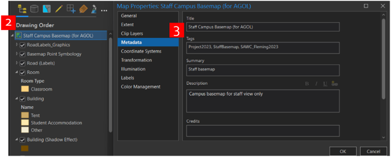
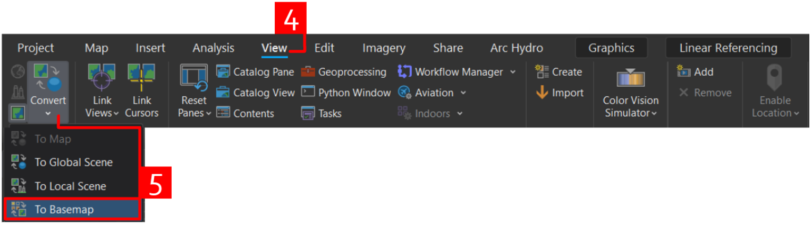
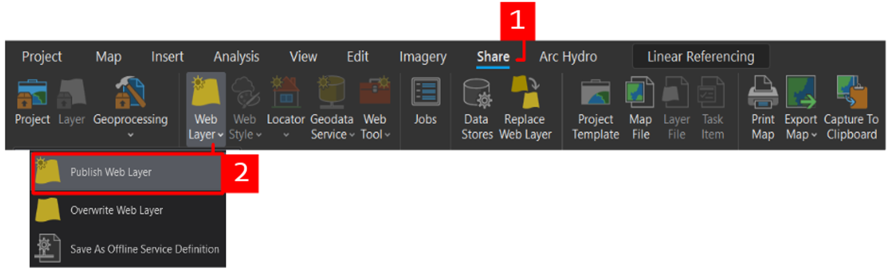
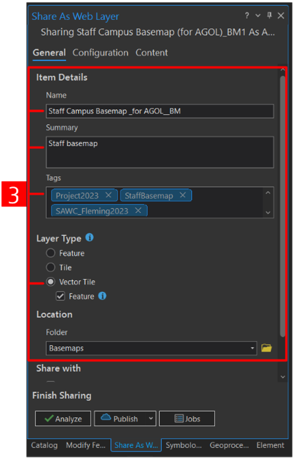

Priority:
Required
Objectives:
Promote SAWC using GIS, Campus Navigation
Academic Requirements:
Cartographic presentation, Data acquisition
Additional Details:
Multiple customized basemaps were made to provide students, staff, and visitors a reference to locate themselves and navigate around campus. Different versions were created to suite the different deliverables of the project. First, we created a basemap for the general public, which hid certain areas of the campus that are only accessible by SAWC staff. Second, we created a basemap for SAWC staff which included all areas of the campus and the surrounding area. Finally, two sub-versions of the public basemap were designed specifically for the different navigation and asset management solutions to account for the different operational layers and labelling used in those web maps. For example, in the paper version of the basemap, the staff zones were symbolized to de-emphasize the areas off limits to the general public. However, in the navigation application, these zones were left unimpeded.
Once all the data was collected and cleaned and the file geodatabases were created, we started to design the basemaps. In the planning phase of the project, we determined which layers would be static in the basemap versus operational, which was finalized in the first week of the project implementation. These included all reference layers to help visitors orient themselves within the campus, such as roads, buildings, fences, parking lots, and other distinguishable features like the soccer field, garden, and swimming pool.
The next step involved adding the base layers to a map frame and designing the symbology and colour scheme, following cartographic conventions.
In the properties of the map frame, we included the map title, description, summary, and tags. These were important to set in the map frame, before converting to a basemap, as they would transfer over to the basemap once converted. This helped save from rewriting the information in the basemap if it was deleted and re-created from the map frame. The final step was to convert the map frame to a basemap. Once the map was converted to a basemap, it became available under the general list of available basemaps for that project.
Adding the reference layers to a map frame.

Setting the title, description, summary, and project tags.

Converting the map frame to a tiled basemap.
To use the basemap in web maps and applications, it was necessary to share it to the AGOL environment. The layer type that worked best, in terms of tiling and storage, was to share as a vector tile layer with the Feature option selected. This allowed the basemap to be shared as a vector tile layer, with an additional feature layer package shared to AGOL. Therefore, the vector tile layer acted as a standard tile basemap and the feature layer package housed all the layers present in that basemap. In the configuration tab of the Sharing As Web Layer, the tiling scheme was set, sync was enabled, and allowing clients to export cache tiles was enabled.

Publishing the Basemap as a Web Layer to AGOL.

Configuring the Basemap for upload and publishing as a Vector Tile Layer.
Finally, the custom basemaps can then be used, just like the standard ESRI basemaps, by accessing them under the Basemaps tab and adding to a project.
Accessing the basemap in the list of available basemaps.
Displayed below are the results of the public and staff custom basemaps created. The first version is for public viewing and the second version is for staff only. The staff version does not hide any part of the campus and it includes a larger extent around the main campus, so the three research zones are visible. This is useful as staff can use the basemap as reference when they are in the areas outside of the campus. Furthermore, different variations of the public basemap were created for specific application deliverables, such as the navigation solution, asset management solution, and critical infrastructure solution to account for the symbology and labelling of specific operational layers. A list of all basemap versions can be found here, in the Basemap folder created in SAWC’s AGOL account.
Public and Staff Basemaps